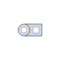

PlugToPin_nConnect one (negative) pin |

|
Information
This information is part of the Modelica Standard Library maintained by the Modelica Association.
Connects the single phase (negative) pin k of the multi phase (negative) plug to a single phase (negative) pin.
See also
Connectors (2)
| plug_n |
Type: NegativePlug |
|
|---|---|---|
| pin_n |
Type: NegativePin |
Used in Examples (1)
|
Modelica.Electrical.QuasiStationary.MultiPhase.Examples
Balancing an unsymmetrical star-connected load |
Used in Components (1)
|
Modelica.Electrical.QuasiStationary.MultiPhase.Basic
Connect all (negative) pins |